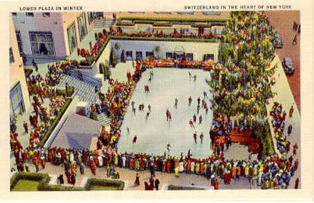

Nov. 25th, 2003 - Feb 1, 2004 New York City --
Two months later…and we’re on
the road again, headed south on our coast-hugging journey back to
Seattle. A bunch
of you have been kind enough to drop a line to say “so…um…when are you
going to write more?” Other popular sentiments are “where the hell are
you?” and “your site is out of date.” But
gosh—it does suggest a desire to read of our journey. So, thanks!
That’s genuinely heartening.
I chose not
to chronicle our daily existence in the town so nice they named it
twice. Much of it was spent visiting with family and friends. There was
plenty of gadding about the city, taking in shows, movies, and museums
and touring around with guests. Many fine eateries fueled the effort.
(See a guide to all at the end of this entry.) We
wandered the streets, soaking up the place. Though in January, that
meant avoiding frostbite. It was the coldest month recorded in
NY--ever. Layer, upon layer, upon layer, topped by mufflers and hats
barely did the trick. Coming indoors meant an elaborate strip tease and
a blind faith in the organizational skills of the coat checker. Going
out for a quart of milk became a heroic act. You didn't just go to the
store. First, you considered switching black coffee.
Then, unswayed, you WENT TO THE STORE and lived to tell the tale. Shel
and Ericka visited
us at the height of the cold snap and were great company, plucky and
undeterred by the weather. Shel worked his magic to score us tickets to
a Daily
Show taping on a night so cold that Eric developed ice crystals on
the inside of his glasses. Stewart's guest, Sen. Joe Biden, scored
coolness points with his daughter for being invited to perch on
Stewart's couch and with us for his sane notions on on the Bush
administration's misguided mission in Iraq.
Other activities warmed the soul: we
continued to
dance about architecture, working with our east coast architect, Jeffrie Lane, on our
cabin in the woods, soon to be built in Valley Cottage, NY.--
Clarkstown
permitting board willing. (Jeffrie is also designing an addition for my
parents' house.) Jeffrie,
a longtime neighbor of my sister, Christine and brother-in-law
Ken, turns out to be not only a gifted architect, but a pal, too,
scoring us tickets to They
Might Be Giants at Irving Plaza. (A wonderful night. We hadn't
seen them in years, but have been fans since their
two-guys-with-a-tape-recorder days.) And meetings with landscape
architect Kris
Karlsson--Tina's brother--were a treat both personally and
professionally. He's just as sweet and funny and gifted as we
remembered. On this visit, we got to meet his partner, Vladimir--a
peach of a guy. Both braved a blizzard to take us out to Mexican on
Columbus Avenue and we were so glad they did.
We can't say enough good things about jolly-spirited Mark Platas and
his excellent crew of folks, who are up to their frozen eyeballs in
restoring my sister's Valley Cottage farm house. (Mark has been kind
enough to take on a few projects at my folks', too.) What a fine group
of folks. We feel very lucky to be connected to all of them.
But home is not forgotten: we communed with our dear pal and west coast
architect, Bob Swain, on the
renovation-in-progress on our guest house. We also kept working on the
master plan for
updating our Seattle house. We were lucky enough to have
two face-to-face visits with Bob: one, at a spectacular inn run by friends of
his in Western Massachusetts; the other, a month or so later--a
marathon session during a
long weekend he and Stefano spent visiting us in Manhattan. (Congrats
to
Stefano! He's the newly appointed curatorial director at Atelier 31.)
Getting to see both of them in NY and to introduce them to my native
stomping grounds was great fun.
There are moments from our NY visit
that linger: arriving. Arriving!!...
the media hysteria over the just-in-time-for-Christmas orange alert.
Walking into St. Patrick's on Christmas Eve and
wondering where all the cops were and then walking from midtown to the
Village in an unseasonably warm, driving rain and
seeing Manhattan's finest stationed at all sorts of improbable
places...Attending
Christmas Eve services at Zion Church in Dobbs Ferry was touching and
nostalgic...The first big snow that fell in early December, and the way
it muffled all
that
honking and chaos (before it turned to massive slush puddles,
forcing you to stand back from the curb when waiting to
cross the street or be splashed and coated in
muck.)...Driving back and forth to my parents' house along the West
Side Highway
with the frozen Hudson on one side and Riverside Drive's lovely
apartments on the other consistently filled me with a sense of
well
being...Walking at Hook Mountain State Park--again, with the Hudson at
my side and Rufus looking for something stinky to roll in still brings
a smile...Stopping in front of the house that was Eric's family's
during
high school...I could go on. It's a different relationship to the
towns up the river from Manhattan, but really a lovely one.
It's hard to explain how much I
loved being in New
York. The place is huge and loud. It buzzes. It smiles on eight
year-old in you who NEVER wants to go to bed. As a child--and, to be
honest, an adult--who falls asleep on the living room floor more
readily than I head for my mattress, it’s a great emotional fit. Like
it or not, New York forces you to be awake, engaged and present.
Stepping outside means slipping into the parade of humanity streaming
up and down the streets. All those faces to consider. All those faces,
flying by like snowflakes; the density and constant, swirling wonder of
it. Walking, or riding the subway, or weaving through traffic in a cab
piloted by a seemingly suicidal driver, the pulse of the place is
constant. Here’s my personal paradox: the city’s amped-up energy makes
me feel happily and completely calm. Most drivers put me on edge. But
toss me around in the back of a careering Manhattan cab and I’m
invulnerable. Delighted, even. The hordes of people on the street evoke
an irrational sense of safety. Waking up at 2 a.m. and peeking out the
living room windows at the constant flow of traffic and the folks who
still have reason to be out is reassuring. We’re all here, we’re in
motion. All feels right. And when a wall of snow dumps down on it all
and muffles everything, it's even
better.
Central
Park, which was a couple of blocks from our apartment, is now an
old friend. Its
winding walks, bridges and tunnels—-familiar from childhood, but always
confusing, finally form a true map in my head. Other tiny bits offer
glimpses of an insider’s view: walk by the Central Park Zoo at 3:45 and
you’ll catch the sea lions in their second show of the day, trading
tricks for fish, no admission required. Pass back by at 4:10 and the
parade of animals clock will chime, sending the bronze critters into
their circular dance. (Something’s wrong with
it, the on-the-hour chime is out of synch.)
One of my favorite NY moments
happened in the
park. It was the 23rd anniversary of John
Lennon’s assassination. A couple of days before, a snowstorm had dumped
more than a foot over New York and it had stayed cold enough for the
park to remain deep and crisp and even. (So what if the sidewalks were
glassy with ice?) We’d gone to a rather bad movie with
Tinoo, (Patricia Clarkson was great, though) and decided to put it all
behind us with a walk through the park. Passing by the Lennon
Memorial at Strawberry Fields, a few minutes before 11 p.m., there
were still hundreds of people gathered in the cold, singing. It wasn’t
what you might imagine--this group sang really, really well. We
listened for a while, and headed off into the
park, strains of “Stand By Me” fading as we
walked from the memorial. That night, strolling Poet's
Walk, there was hardly a soul out and that part of the park felt like
something out of an Edith Wharton novel. That was the night we learned
of Fitz-Greene
Halleck, a satirist memorialized along the
walk with a gigantic statue. He was so popular that Rutherford B. Hayes
and most of the Cabinet
turned out to for its dedication. So many people came, in fact, that
the park was badly damaged by the tromping it took from the masses and
a law was passed outlawing such large public assemblies. Today--we
haven't a clue who this guy was. Useful perspective.
With
that in
mind, enjoying
the moment was the order of the day. We were happy to do that with lots
of pals: Dan Bornstein visited from SF and we were pleased to meet his
sweetie, Kristin. Early in our visit we were lucky enough to help
Steven Schardt celebrate his birthday at Pravda,
in the village
and to see him again for lunch with Shel and Ericka. James Marcus and
his partner Nina were wonderful dining companions at La
Luncheonette
and we wish we'd had the opportunity to visit more;
ditto Kerry Fried, who joined us for a walk through Central Park on a
rare, balmy day. Keith Williams, who is keeping our home fires burning
in Seattle, ventured to NY on business and was a treat to see, all
happily recoupled up and glowy in the company of the lovely Manine
Golden. (Rufus was positively giddy to see Keith, who has so often
cared for him while we've pursued our wandering ways.) David Kaminsky
and Tiffany Card were frequent and entertaining dining and theater
companions who helped us ring in the New Year with a night of games at
their place in Nyack. (Their Boston Terrier Ellie was an energetic
source of entertainment for the aging Rufus.) Every time we see Joe
Lurio--a doctor pal from high school who was so certain of his path in
life that even then we called him Dr. Joe--and Penny Wolfson, an
accomplished writer
and his charming wife -- it feels so easy it's
like we saw them last week instead of last year. Neil Roseman paid a
brief visit on a one-day business jaunt to NY, and if we hadn't been so
stymied by our human roots, we would have rolled over to have our
bellies rubbed, as Rufus did upon seeing him. (As it was, we badgered
him for news of Rose and Henry.) We hadn't seen Neil Lavey in, oh, say
23 years, so there was a bit to catch up on (including meeting Blair,
his wife--who we thought was a pip in all the best ways.) Richard
McKeon (priest at the aforementioned Zion Episcopal Church) and his
partner Tim gave us a great send-off from the big city, treating us to
a dinner at Rosa
Mexicano.
The little cliff diving dolls on the restaurant's walls
had a certain symmetry with our bizarre dining experiences at the Mayan
in Salt
Lake City.
We
had a wonderful time with family,
too. My mom
and dad at nearly 80 and 83, respectively, continue to amaze us with
their spirit and stamina. Both are still active in their community--my
dad, keeping track of all things political in Dobbs Ferry and raising a
ruckus when necessary, still on the board of the Dobbs Ferry Historical
Society and the democratic party and working on video oral histories of
villagers and other historical video projects; my mom, serving on the
vestry at Zion Episcopal Church, working in the thrift shop there and
singing in the choir (not to mention producing the printed program for
the church service and bulletin each week). Then there's the Woman's
Club, Investment Club, two book groups, musical series in Manhattan at
Town Hall and the NY City Opera. Their lives are fuller than lots of
people I know who are half their age. They hosted some lovely evenings,
with my foster brother, Thom Johnson, an art teacher at Irvington High
School, and Pam Strachan, librarian in Irvington and church organist
and choir director at Zion. Another night we visited with my Aunt
Marie and Uncle Fred and my cousins Eileen and Barbara and their
husbands Nick and Sal. The hit of that evening was definitely the
youngest
member of the family: six-month-old baby Cecilia--a charmer and true
beauty.
My
sister and her husband (Christine
and Ken) were
perfect, entertaining and frequent hosts to us, at Thanksgiving,
Christmas, and so many nights in between that it's impossible to count
them all. Christine, disappointed, I think, that I didn't write up
specifics of our days in NY suggested the following text would be
appropriate for her entry: "Say that I'm the most charming, delightful
sister a person could hope for. That I'm beautiful and wonderful and
wise. Oh, and that I'm the best entertainer and cook who served you so
very many delicious meals. And I can sing and I'm smart and I'm
uproariously funny. And my cats are beautiful, too." So there you go,
Christine. Who am I to argue? I think Ken is a fine guy, too. Had
he
recited his virtues, I'd have posted them, as well. (Ken, it's not too
late--the Web is easily amended.) Seriously--they were both wonderful
to us
and we had a fine time hanging out and putting our heads together on
the little compound we'll share in Valley Cottage. We were all wary of
how Rufus and their kitties, Molly and Desmond would get on. After
much barking, which translated to
"play-with-me-play-with-me-play-with-me," Rufus came to understand that
Molly wanted a piece of him, and Desmond, while gentler by nature, was
still part of the dark, triangulating wing that lived to
pin him into a corner. Still, all did along remarkably well
with each other. It bodes well for future encounters.
Time
to wrap it up. Let's just say,
the two months
did much to bring us closer to family and to fuel the feeling that a
sometimes homestead in NY is a very good idea, indeed.
Stats
Slept
at: The Phillips Club
Sweated at: The
Reebok Sports Club/NY
Watched modern dance through: our
living room window
Shows
we saw:
Avenue
Q
Wonderful
Town
The
Retreat from Moscow
Wicked
Anna
in the Tropics
All
My Sons
Shows worth seeing:
All but Anna in the Tropics
Restaurants:
Avenue
Bistro
Burger
Joint
Carnegie Deli
Craft
Cafe
Luxembourg
Compass
Divane
Gramercy
Tavern
Harvest
on Hudson
La
Luncheonette
Morrell
Wine Bar
New
City Diner (where you can enjoy "the propinquity of the cosmos" as
the signs in the parking lot promise. Also, they claim their steak is
"A Piece of Resistance." I'm not kidding.)
Le
Pain
Quotidien
Pomodoro
Pravda
Rolf's
(where it's Christmas all year 'round!)
Rosa
Mexicano
Serendipity3
Union
Square Cafe
Movies
The
Triplets of Belleville (It's
simply great--go
see it!)
Bad
Santa (not fab)
Pieces
of April (pretty bad)
Elf
(dumb funny, but better than you'd think)